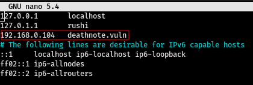

Deathnote: 1 - Vulnhub
Uploaded : Sept 06 2021
Hii guys, today today we are going to root a very easy machine from vulnhub called Deathnote. This is a very straight and forward machine need lil bit for enumeration and bruteforce, so let's hunte the ROOT.
Host Discovery
First thing first's we need to find the IP address of the machine, i am running this machine on my local network so the host discovery scan i'll be doing on my local network.As we can see in the image below, we got the target ip which is 192.168.0.104 and now lets start our enumeration.
Nmap Scan
As always we can going to scan with default scripts, enumerate all versions, all ports, time tamplet and output our scan results in all format.
so as we can see in the scan results image, only two ports are open first one is 22 which is ssh and the version of ssh is 7.9p1 which is not seems to be vulnerable and second one is port 80 on which a apache server is running and the version of apache is 2.4.38 and again which not seems to be vulnerable.
Web Enumeration
Let's explore the website hosted on this server and before visiting we need to add the hosts name which is deathnote.vuln and ip of this machine in our hosts file as shown in the image below.
So as we can see in the image below this is a normal wordpress website running and there is a hint button after clicking on that it tells us to find user.txt file so i think we need to bruteforce web directories but as we know that bruteborcing web directories on wordpress website may gives us lot's of unnecessary files so i decided to look inside wp-content/uploads directory.
and as we can see in the image below, i found 2 txt files first one is notes.txt and second one is user.txt.
after looking inside both the file we get some usernames and some passwords, means we got userslist and there passwords list as shown in the image below.
Brute Forcing SSH
Now, we got the usernames and passwords but we dont know which username and password is correct to login in ssh so for that we need to brute force SSH service with hydra if if you dont know how to bruteforce with hydra then you should read my blog on Hydra.
so we git the username and password as shown in the image above and now we can login in in ssh with username: "l" & password : "death4me".
User Flag
We now loginned into ssh and as shown in the image below we got the user flag but wait, it does not seems to be readable. But the encryption looks like brain-funk, i am using an online decoder there are lot od tools available to directly decrypt such types of encryptions but i prefered to use online decoders it depends on individuals choice. Decoder used dcode.fr
So we decrypted this encryption and it says somthing about shell and kira i dont know if it is any kind of hind or just a normal flag. Very weird flag though.
Root Acess
so i tried to find SUID binaries and did lil bit of enumeration with the help of linpeas but didn't got anything jucy then i started checking each directory like var, opt, etc and i found something jucy inside /opt directory as shown in the image below.
I found 2 directories inside L directory and after looking inside each directory i got 2 text files after catting the 2nd text file i fot a .wav file and a text file which says use cyberchef so i transfered the .wav file on my machine using SCP.
after transfering the .wav fle first i checked the type of file and it says ASCII text which means it is a text file, catting the .wav file we get hex after decoding hex we get base64 and after decoding that we get a password and i think we can use that password to switch to another user.
and we are loggined into the user named kira, then first of all i checked that which commands we can run as root with sudo without password with the checl of sudo -l command and as shown in the image below, we can run any command as root using sudo without passwordm so now to switch to root use sudo su root command and waala we are root cat the root flag and we are DONE!
This machine was very easy and we learned how to brute force and lil bit of encryption stuff..See you guys in the next hunt BYE! :)
@2021 Rushi0x04T7. Some rights reserved.